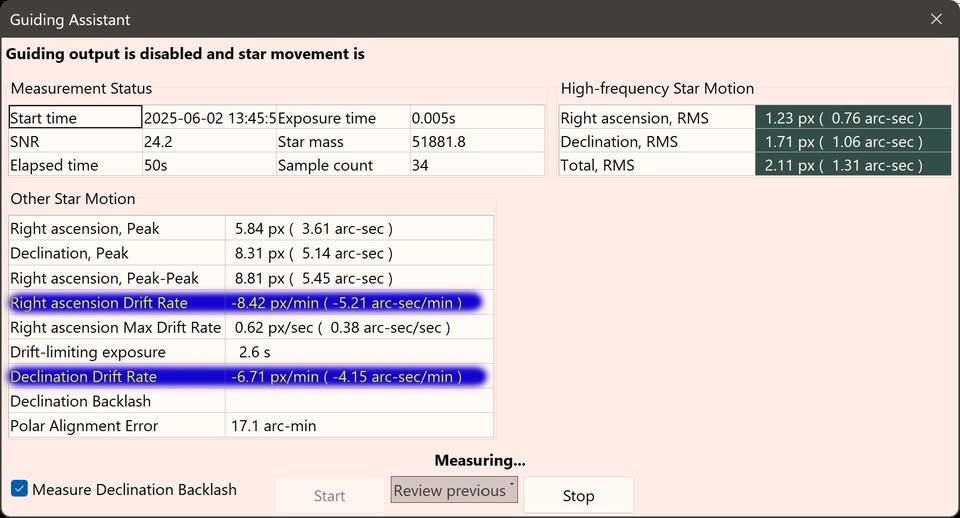
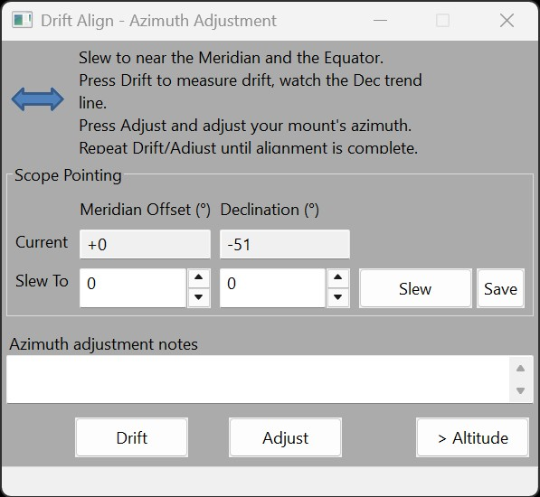

Accurate polar alignment is crucial for achieving stable guiding during astrophotography. While nighttime polar alignment is typically straightforward, daytime polar alignment presents unique challenges due to the absence of visible stars. This chapter explains how to use PHD2 tools to refine your alignment for daytime imaging, particularly for solar and lunar photography.
While solar, lunar, or planetary imaging does not demand the highest degree of polar alignment accuracy, be aware that significant polar alignment error can degrade guiding performance or cause autoguiding to fail. In many cases, a rough polar alignment may be sufficient for daytime imaging, but refining the alignment can improve tracking and guiding performance.
Ensure the mount’s altitude matches your geographical latitude and that it is properly leveled to avoid unnecessary drift. Begin by roughly aligning your mount using a compass or a smartphone application such as PolarAlign Pro or a similar tool.
Use the Find & Track tool to fine-tune detection parameters. For detailed information and examples for setting detection parameters, please refer to Find & Track. The same live detector interface applies to shared and supported physical PHD2 cameras.
If the selected object for daytime polar alignment is the Moon or the Sun, it is strongly recommended to start Dynamic Target Tracking before using PHD2's Guiding Assistant or Drift Alignment Tool. This ensures that the mount is already following a more accurate target-specific tracking model before PHD2 measures drift.
This step is especially important for lunar imaging, where the dynamic lunar rate can significantly improve the accuracy of drift measurements. The same principle also helps solar imaging, although usually to a lesser extent.
Before using this method, make sure you have entered the correct focal length in the HelioMaker main screen. An incorrect focal length will lead to inaccurate drift measurements and may cause PHD2 calibration to fail or produce incorrect results. When using the Drift Alignment Tool, do not use the Slew button in this dialog, as it is designed for nighttime polar alignment when stars are visible, and is not suitable when only a single object such as the Sun or the Moon is in view.
With Guiding Assistant you can measure drift and make manual adjustments. This method, recommended by the author, is explained in detail here: Fine Tuning Polar Alignment.
In summary: observe the drift in PHD2’s guiding graph (guiding is disabled during this measurement to allow drift to be plotted over time) or monitor the real time RA and Dec drift rates shown in the Guiding Assistant dialog. Adjust your mount’s altitude and azimuth until the drift is minimized.
Ideally, each drift measurement should run long enough to average out the mount’s periodic error and show a clear drift trend. In practice, a one minute measurement is usually sufficient, especially when the polar alignment is far off. Make only small adjustments to the altitude and azimuth bolts to keep the target in the field of view, allowing you to re-center it easily with gentle slews if needed.
After completing polar alignment, run or enable PHD2 calibration as part of your sequence to ensure optimal guiding performance. Note that after PHD2 calibration, any change to the camera angle or adjustments to image flip options in SharpCap will invalidate the calibration. In such cases, repeat PHD2 calibration to maintain accuracy.
When performing this workflow on the Moon, it is strongly recommended to enable Dynamic Target Tracking before starting calibration or drift measurements. Using the dynamic lunar tracking rate can greatly reduce drift and, if the mount is properly polar aligned, can result in practically no orthogonality error during PHD2 calibration on the Moon. It is also very helpful when using Guiding Assistant for daytime polar alignment with the Moon as the selected target. The same principle may also benefit solar imaging, both for PHD2 calibration and for Guiding Assistant-based daytime polar alignment, although usually to a lesser extent.
For the original PHD2 Guiding Assistant documentation, refer to: Guiding Assistant.

The Drift Alignment Tool provides a similar, and in some cases more convenient interface. However, do not use its Slew button to move to the suggested declination; this will slew the telescope off the Sun (or Moon) and you will not be able to continue.
Important: unlike the GA tool, this method depends on a successful, up to date PHD2 calibration. If the calibration is missing, outdated, or incomplete, it will not produce meaningful results.
For the original PHD2 Drift Alignment Tutorial, refer to: Drift Alignment.

If your polar alignment is very poor, PHD2 calibration is likely to fail with a warning about excessively large orthogonal error. When this happens, HelioMaker will not be able to start a sequence because PHD2 cannot begin guiding without a successful calibration. In such cases you will need to repeat the polar alignment. You may find it helpful to use a trial and error approach with larger adjustments to the altitude and azimuth bolts to locate a more favorable starting point before performing a finer polar alignment.
For additional tools and techniques, refer to the PHD2 documentation on guiding and alignment tools: PHD2 Tools Documentation. You can also explore related resources and tips by searching for daytime polar alignment techniques online.